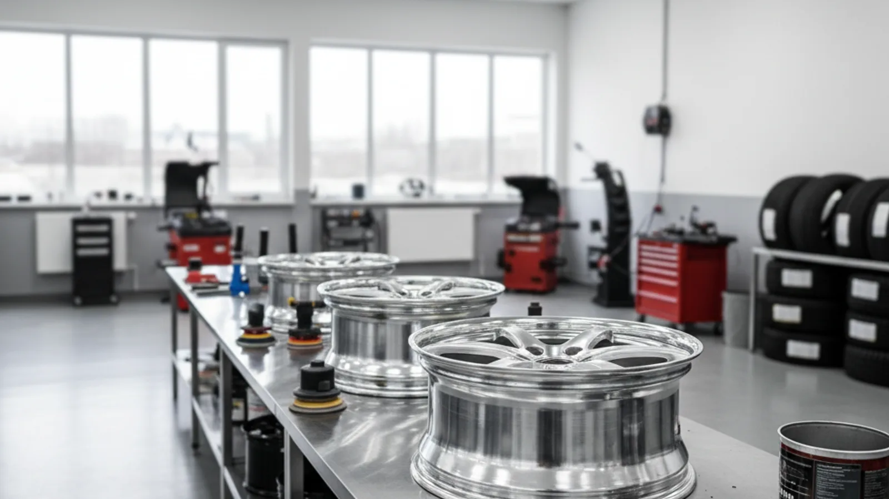

Felnijavítás
A behorpadt, ütött vagy szivárgó felni sokszor megmenthető. Lemez- és alufelnit is javítunk, az alut pedig görgőzzük.
Budapest XVI. kerület, Csömöri út 33.
Amit kínálunk
Behorpadt acélfelni egyengetése és javítása 3 000 Ft-tól, hogy ne kelljen újat venni.
A behorpadt alufelni görgőzése és szerelése 17 collig 14 000 Ft. A felni visszanyeri a kör alakját.
Nagyobb felniknél: 18 colltól 16 000 Ft, 20 colltól 18 000 Ft, a szereléssel együtt.
Megrepedt vagy lyukas felni hegesztése varratonként 7 000 Ft, ahol ez biztonságosan megoldható.
A peremhorpadás és a kisebb deformáció jellemzően javítható. A repedést megnézzük, és őszintén megmondjuk, érdemes-e nekiállni.
Ha utángyártott felnit szerel, a megfelelő tehermentesítő karika garnitúrája 8 500 Ft, hogy a kerék pontosan központosítson.
Így dolgozunk
Online kiválasztja a szabad idősávot, vagy felhív minket a +36 30 248 6688 számon. Megbeszéljük, mire van szüksége.
Időpontra fogadjuk, így nem kell sorban állnia. A munka jó részét akár meg is várhatja nálunk.
Gyorsan és precízen dolgozunk. Megmutatjuk, mit találtunk, és csak azt csináljuk meg, amire tényleg szükség van.
Fizethet bankkártyával vagy készpénzzel. Pár perc, és már viheti is az autót.
Árak
Lemezfelni javítás 3 000 Ft-tól. Alufelni görgőzés szereléssel: 17 collig 14 000 Ft, 18 colltól 16 000 Ft, 20 colltól 18 000 Ft. Hegesztés varratonként 7 000 Ft.
A görgőzés ára a szerelést is tartalmazza. Mielőtt nekiállunk, megmondjuk, hogy a javítás megéri-e az új felni árához képest.
IdőpontfoglalásGYIK
A görgőzés során egy speciális gépen visszaformázzuk a behorpadt alufelni peremét, hogy újra kör alakú és légtömör legyen. Sokkal olcsóbb, mint egy új alufelni.
A peremhorpadás általában igen. A repedt vagy korábban már rosszul javított felnit megnézzük, és csak akkor állunk neki, ha biztonságosan helyreállítható.
Ha javíthatónak ítéljük, akkor igen, a görgőzés és a szakszerű hegesztés tartós megoldás. Ha úgy látjuk, hogy a felni nem menthető meg biztonságosan, azt megmondjuk.
Nem feltétlenül. Ha a gumi ép, visszaszereljük a javított felnire. Ha a defekt a gumit is tönkretette, arról külön szólunk.
Hozza be, megnézzük. Sokszor olcsóbb megjavítani, mint újat venni.
További szolgáltatások
Kerékkiegyensúlyozás hozott vagy felszerelt keréken. Megszünteti a kormányremegést, és kíméli a futóművet meg a gumit.
Gumidefekt szakszerű javítása segédanyagokkal. Ha beesik hozzánk egy csavarral a kerekében, igyekszünk soron kívül megnézni.
GumiHotel: a szezonon kívüli gumikat és szerelt kerekeket tároljuk garnitúránként. Tavasszal és ősszel csak behozza az autót, a többi a mi dolgunk.